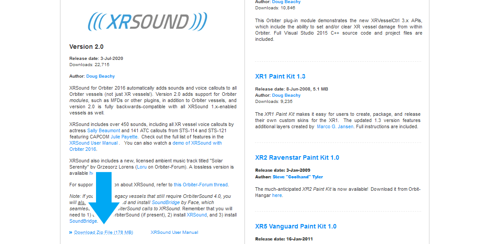
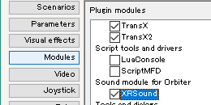
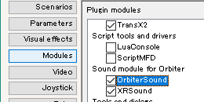

XRSoundのインストールと設定
XRSoundは、Orbiter2016で音声を再生するためのMODです。
ダウンロード
以下のリンクをクリック。
Download Zip Fileのリンクをクリック。

インストール
ダウンロードしたXRSound.zipを解凍する。
中のファイル・フォルダをすべてコピーする。
Orbiterフォルダにペーストして上書き。
Orbiter_ng.exeをダブルクリック。
Modulesをクリック。
XRSoundにチェックを入れる。

SoundBridge
一部のMODはOrbiterSoundを前提に作られている。
これらMODの音声を再生するには、以下のファイルが必要。
Downloadをクリック。
SoundBridge2.0.zip (file version 2.0)をクリック。
ダウンロードしたファイルを解凍する。
中のファイル・フォルダをOrbiterフォルダに上書き。
Modulesタブを開く。
OrbiterSoundにチェックを入れる。

設定
XRSoundフォルダを開く。
.cfgファイルをメモ帳などのテキストエディタで開く。
項目を書き換えて上書き保存する。
XRSound.cfgで、全体の設定を変更する。
XRSound-DeltaGlider.cfgだと、Delta Gliderの設定だけが変更される。
音量を変更する
以下の行を探す。
MasterVolume = 1.0右側の数字を0.5にすると、音量が半分になる。
BGMの設定
以下の行を探す。
MusicFolder = XRSoundDefaultMusic
MusicVolume = 1.0
MusicOrder = random| MusicFolder | BGMファイルの場所 | |
| MusicVolume | BGMの音量 | |
| MusicOrder | random | ランダム再生 |
| sequential | 順に再生する | |
BGMを無効にする
以下の行を探す。
MusicPlayInternal = off
MusicPlayExternal = space| MusicPlayInternal | 機内視点でのBGM |
| MusicPlayExternal | 機外視点でのBGM |
| off | 再生しない |
| space | 宇宙でのみ再生する |
| on | 常時再生する |
ATCを無効にする
環境音として、ランダムにATCの通信音声が再生されるようになっている。
以下の行を探す。
Volume = 1.0右側の数字を0にすると、ATCが再生されなくなる。